6. シナリオ1＋: センサーデータの送信¶
Intel Edisonに接続された照度センサー、温度センサーのデータをEdison上のプログラムで定期的にAWS IoTに送信します。AWS IoTではルールに基づきElasticSearch ServiceやFirehose経由でS3に保存します。WebブラウザからはElasticSearch Service上のKibanaにアクセスして保管されているデータをグラフ表示できます。
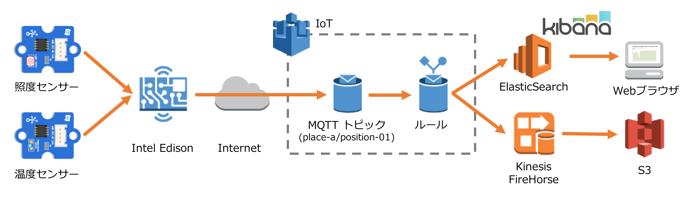送信するセンサーデータは以下のJSONフォーマットとします。
{
"timestamp": "2015-10-24T14:16:37.305Z", ← ISO8601形式
"illuminace": "300", ← 照度 アナログ値
"temperature": "200" ← 温度 アナログ値
}
6.1. プログラムの実行¶
本ハンズオン用に用意されているzipファイルを解凍したaws-iot-handson-fundamentalsの配下scenario1-nodejsにシナリオ1用のNode.jsプログラムがあります。プログラムを実行すると、5秒ごとにメッセージが送られ続けます。このシナリオ終了時までそのまま動かし続けます。ハンズオン終了時にプログラムを終了させる場合はCtrl+Cを押します。
# cd ~/aws-iot-handson-dojo-basic/scenario1/
# node main.js
Connected to Message Broker
Publishing: {"timestamp":"2016-03-27T09:29:19.725Z","illuminance":475,"temperature":467}
Publishing: {"timestamp":"2016-03-27T09:29:24.776Z","illuminance":476,"temperature":464}
Publishing: {"timestamp":"2016-03-27T09:29:29.837Z","illuminance":474,"temperature":466}
Publishing: {"timestamp":"2016-03-27T09:29:34.895Z","illuminance":475,"temperature":465}
Publishing: {"timestamp":"2016-03-27T09:29:39.956Z","illuminance":477,"temperature":463}
6.2. ElasticSearch Serviceへ保存するAWS IoT ルールを作成¶
マネージメントコンソールのサービス一覧から[AWS IoT]を開き、左側のメニューから[Rules]を選択します。
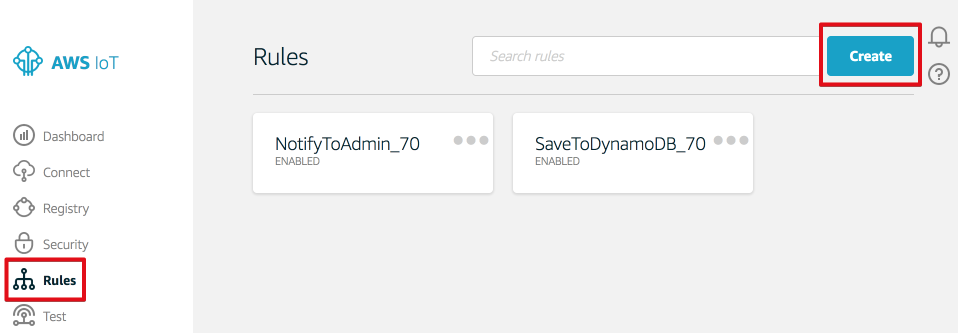その後、[Create]をクリックします。
スクリーンショットの赤枠で囲んだ部分について、以下の項目を入力し、[Add action]をクリックします。
| 設定項目 | 値 |
|---|---|
| Name | SaveToElasticsearch_<参加者番号> |
| Using SQL version | 2016-03-23 |
| Attribute | *, topic(1) AS place, topic(2) AS position |
| Topic Filter | place-a/position-<参加者番号> |
Select an action画面で、[Send messages to the Amazon Elasticsearch Service]を選択し、[Configure action]をクリックします。
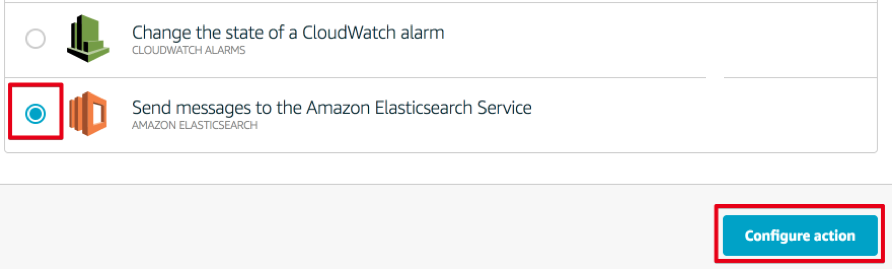[Configure action]画面にて、下記の項目を入力します。
| 設定項目 | 値 |
|---|---|
| Domain name | awsioth-sensor-<英数字> （「2.2. CloudFormationを使ってElasticsearch Searchを自動作成」の最後で確認したElasticSearchDomainを選択） |
| ID | ${timestamp()} |
| Index | sensordata-<参加者番号> |
| Type | scenario1 |
“*IAM role name”横の[Create a new role]ボタンを押して、Elasticsearch Search用のロールを作成します。
“*IAM role name” 欄に、SaveToElasticSearchRole-<参加者番号> を入力し、[Create a new role]ボタンを押します。
新しいロールが作成されるので、メニューから、SaveToElasticSearchRole-<参加者番号> を選択し、[Update role]ボタンを押し、最後に、[Add action]ボタンを押します。
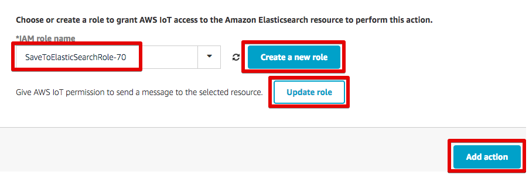最後に、確認画面が出ますので、[Create rule]ボタンを押して、ルールを作成して下さい。
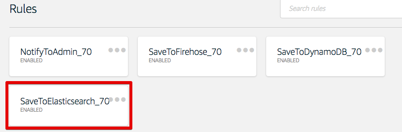6.3. Kibanaでデータを確認¶
マネージメントコンソールのサービス一覧から[Elasticsearch Service]を開きます。「2.2. CloudFormationを使ってElasticsearch Searchを自動作成」の最後で確認したElasticSearchDomainの[Searchable documents]の数字が0より大きくなっていることを確認します。[Cluster health]が[Yellow]になっていのはシングルノード構成のためでありハンズオンでは問題ありません。
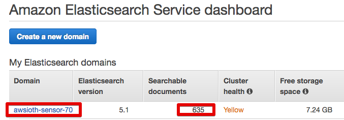[Domain]のリンクをクリックして開きます。
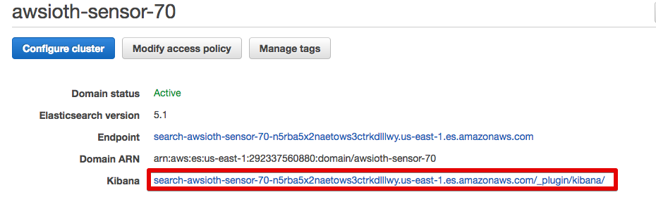Kibanaで表示させるindexを指定します。以下の値を入力して、[Create]をクリックします。
| 設定項目 | 値 |
|---|---|
| Index name or pattern | sensordata-<参加者番号> |
| Time-field names | timestamp (リストから選択) |
[illuminance], [temperature], [timestamp]のフィールドが表示されている事を確認します。

メニューにある[Discover]をクリックし、データが届いている事を確認します。
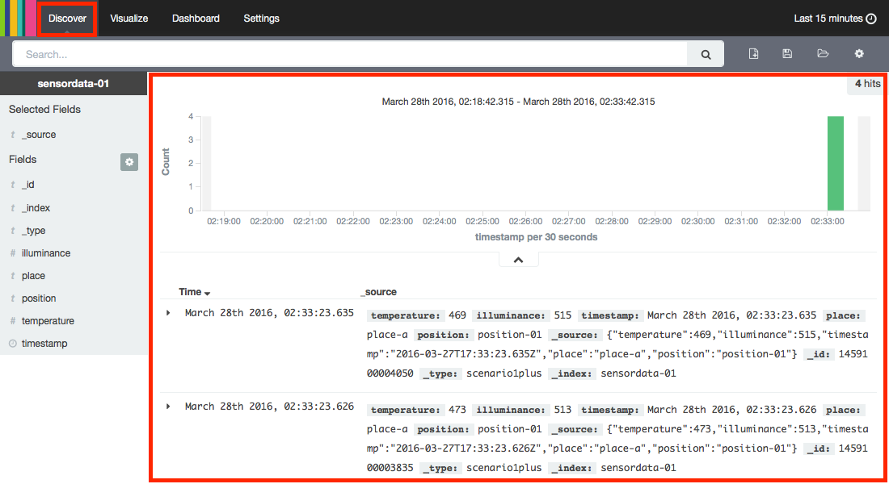メニューにある[Visualize]をクリックし、グラフの種類として[Area chart]を選択します。
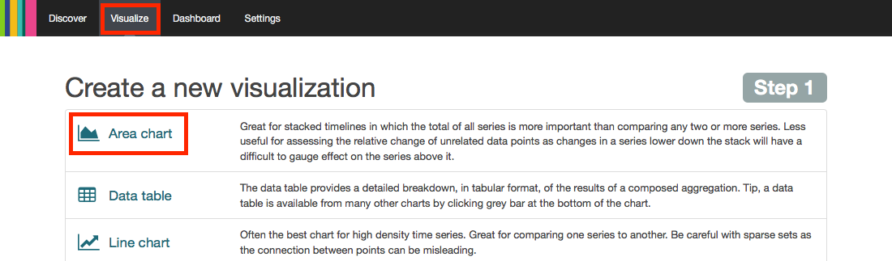[From a new search]をクリックします。
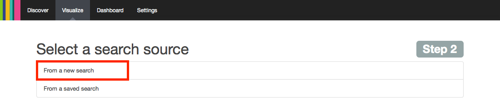データに[sensordata-<参加者番号>]が選択され、Y軸にサンプル数(Count)が設定されている事を確認し、X軸の設定を開始するために[X-Axis]をクリックします。
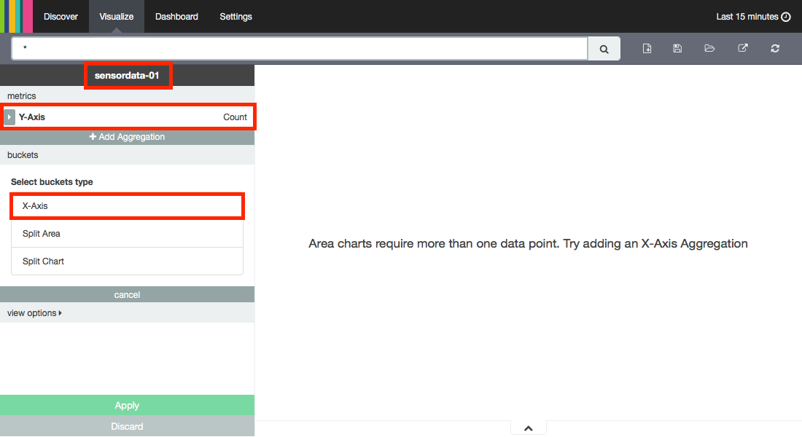[Aggregation]に[Data Histogram]を選択し[Apply]をクリックすると、右側にグラフが表示されることを確認します。
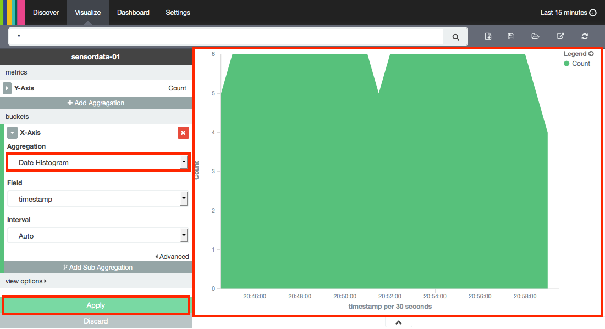保存ボタンをクリックし、[Title]に[Sensor Data - Sampling Count]と入力し、[Save]をクリックします。
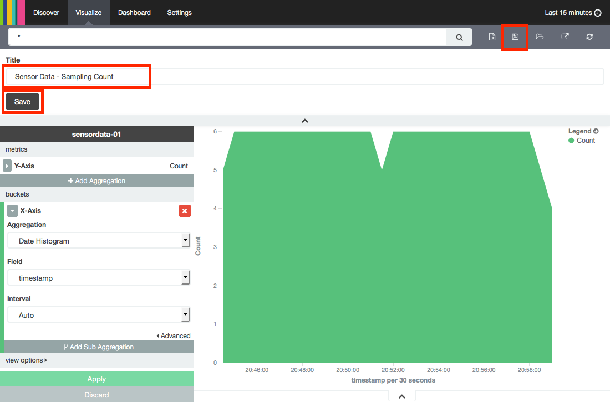保存されたら、Y軸の設定を表示し、[Aggregation]を[Average]に変更し、[Field]に[illuminance]を指定します。[Apply]をクリックしてグラフに適切なデータが表示されることを確認します。
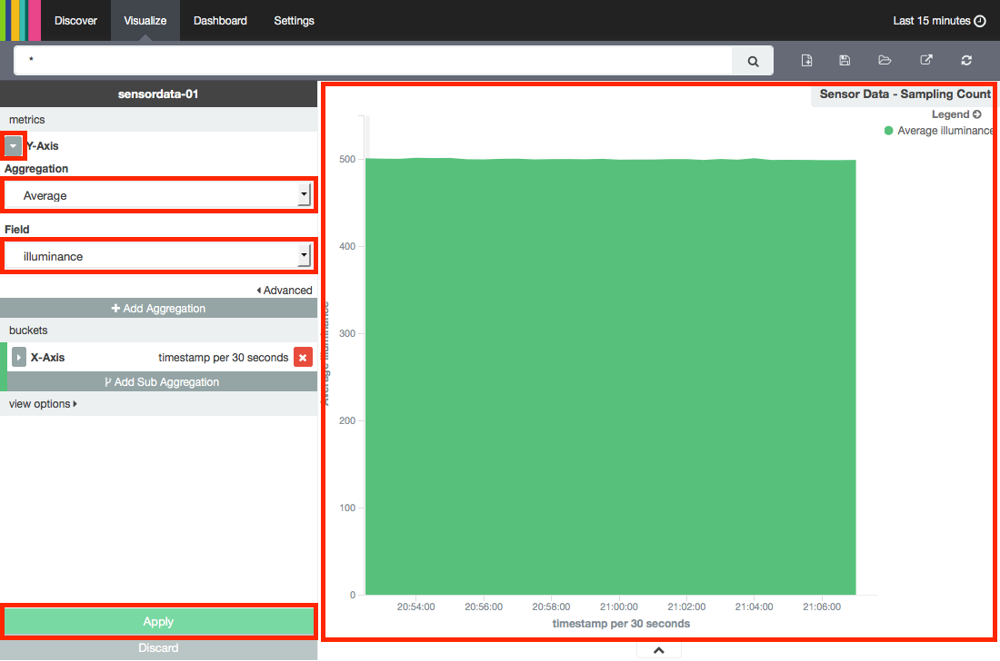保存ボタンをクリックし、[Title]を[Sensor Data - Illuminance]に変更し、[Save]をクリックします。
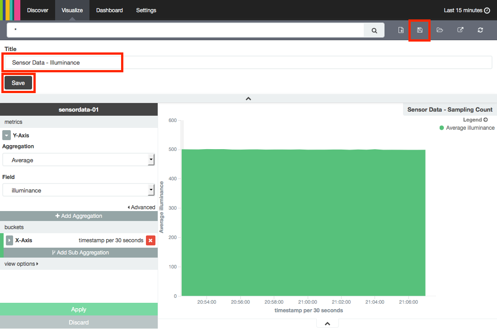保存されたら、Y軸の設定を表示し、[Field]を[temperature]を変更します。[Apply]をクリックしてグラフに適切なデータが表示されることを確認します。
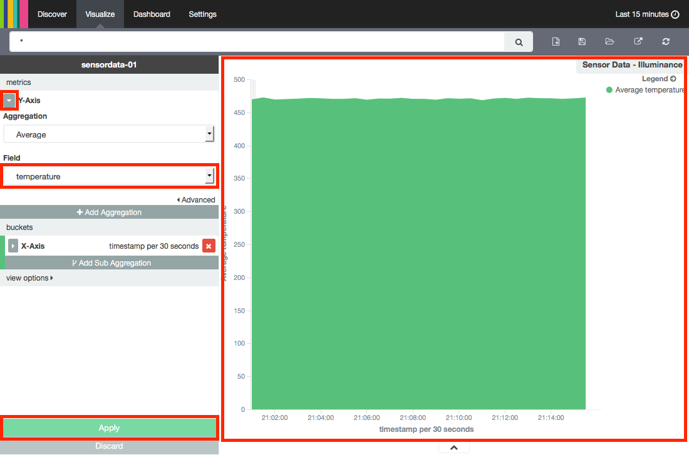保存ボタンをクリックし、[Title]を[Sensor Data - Temperature]に変更し、[Save]をクリックします。
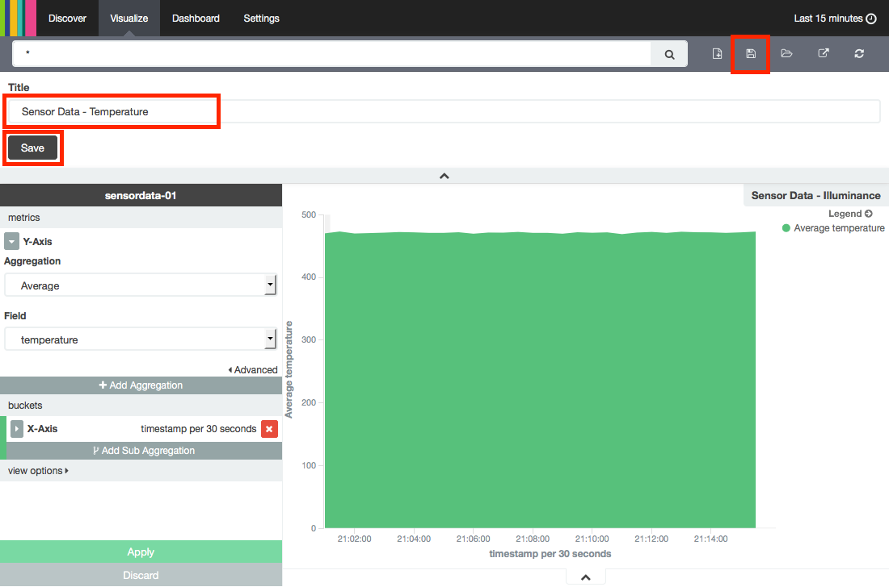メニューにある[Dashboard]をクリックし、追加ボタンをクリックします。
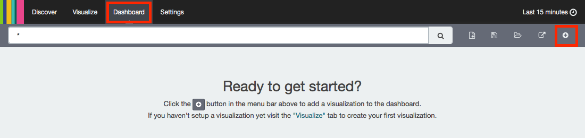[Sensor Data - Sampling Count]をクリックし、下側にグラフが追加されたのを確認します。
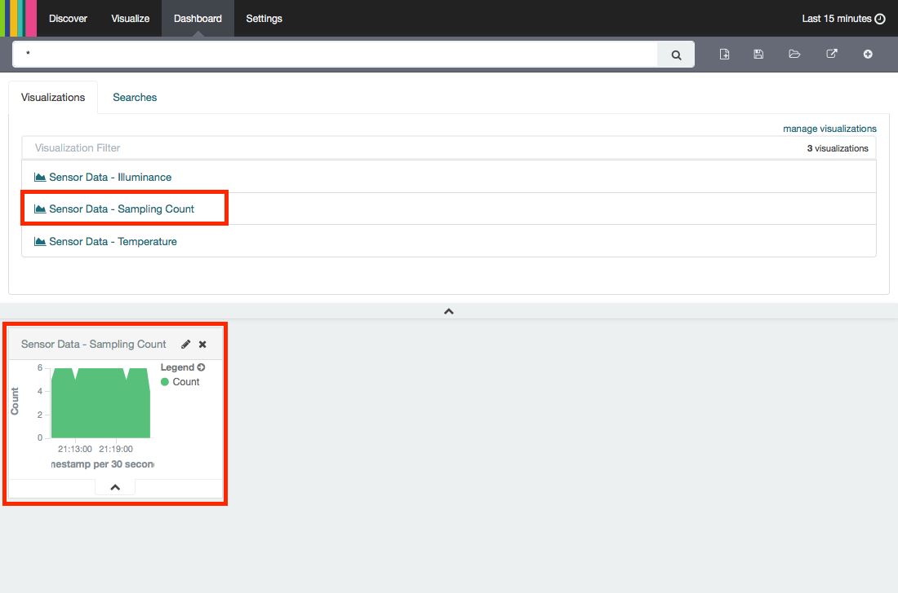同様に、[Sensor Data - Illuminance]、[Sensor Data - Temperature]をクリックし、下側にグラフが追加されたのを確認します。確認したら、[＜]ボタンを押して閉じます。
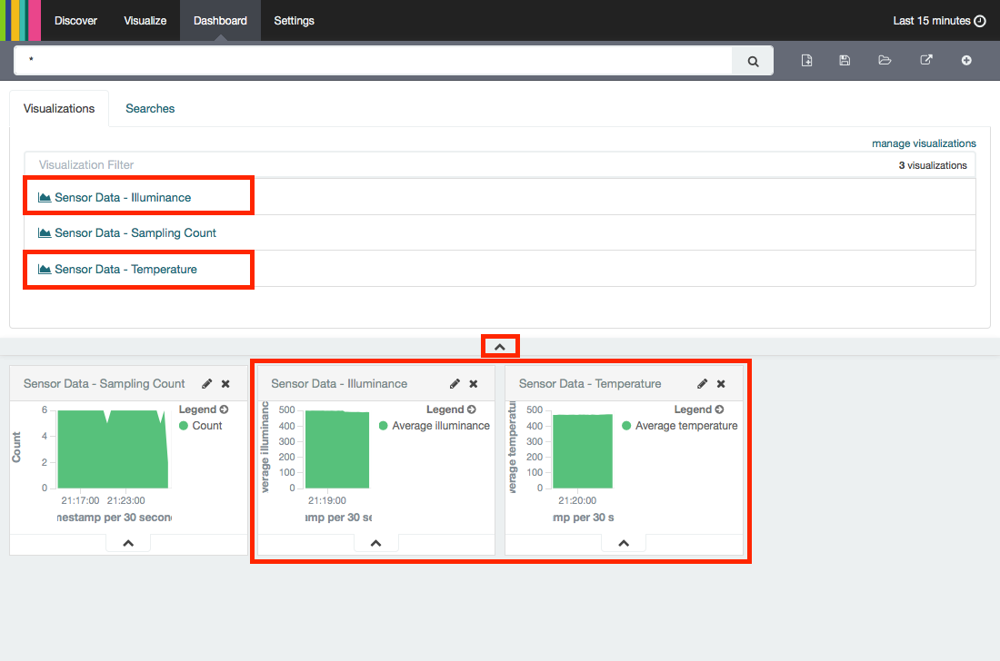保存ボタンをクリックし、[Title]を[Sensor Data]と入力し、[Save]をクリックします。
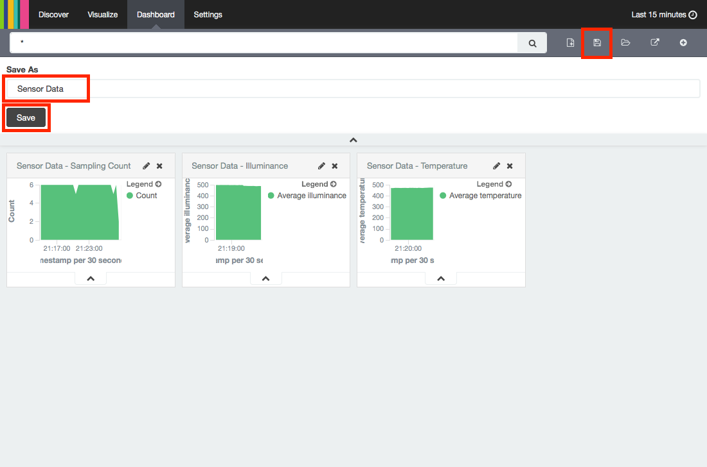右上の[Last 15 minutes]をクリックすると、表示する期間や表示を自動更新する頻度を変更できます。
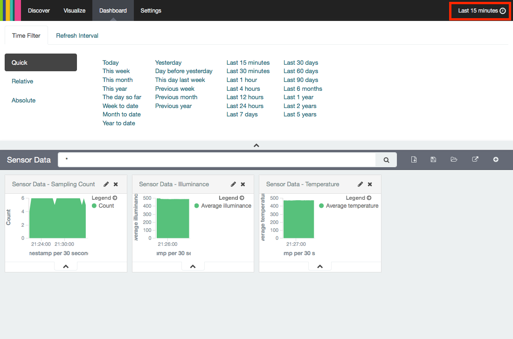グラフをマウスで操作して、位置やサイズを変更することもできます。
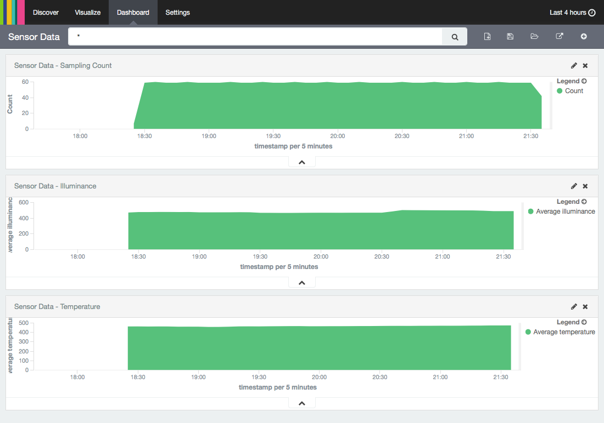